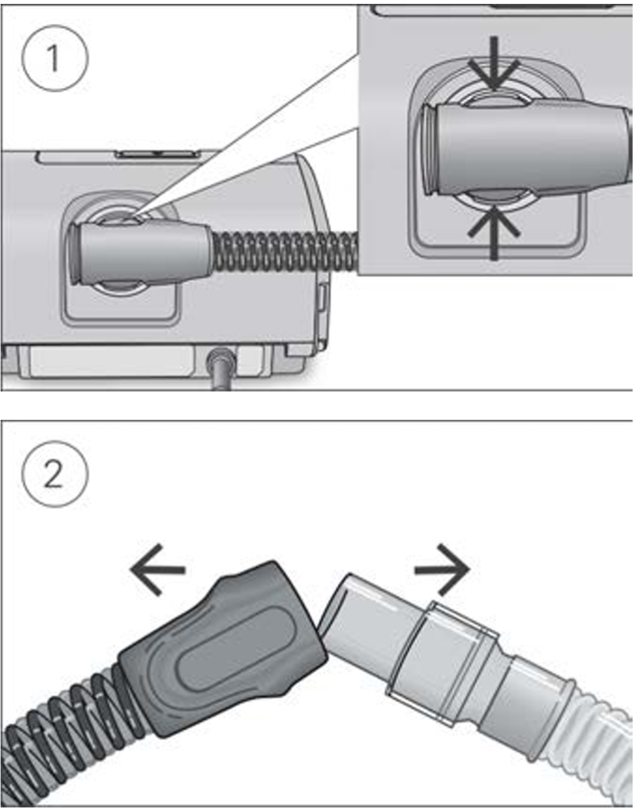

4. Cleaning and maintenance
It is important that you regularly clean your air tubing to make sure you receive optimal therapy. The following sections will help you with disconnecting, cleaning, checking and reconnecting your air tubing.
Disconnecting

- Hold the cuff of the air tubing, apply gentle pressure to the release buttons and pull it away from the device.
- Hold both the cuff of the air tubing and the swivel of the mask, then gently pull apart.
Note: Only hold and pull the cuff of the air tubing. Do not hold or pull the tubing itself as it may cause damage.
Cleaning
You should clean the air tubing weekly as described.
- Wash the air tubing in warm water using mild detergent. Do not wash in a dishwasher or washing machine.
- Rinse the air tubing thoroughly and allow to dry, out of direct sunlight and/or heat.
Checking
You should regularly check the air tubing for any damage. If there are any holes, tears or cracks you should replace it.
Reconnecting the air tubing
When the air tubing is dry, you can reconnect it to the device.
- Connect the air tubing firmly to the air outlet located on the rear of the device.
- Connect the free end of the air tubing firmly onto the assembled mask.